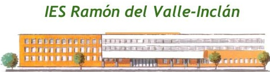
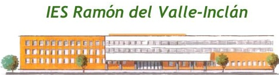
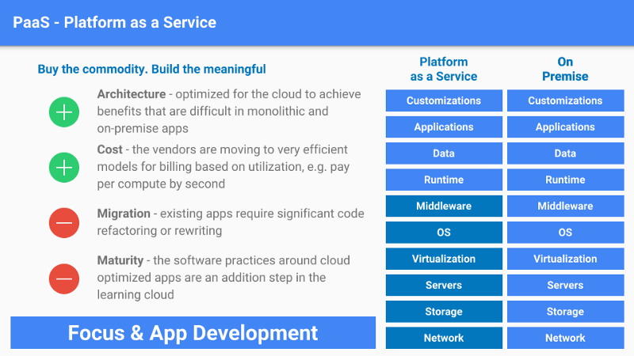
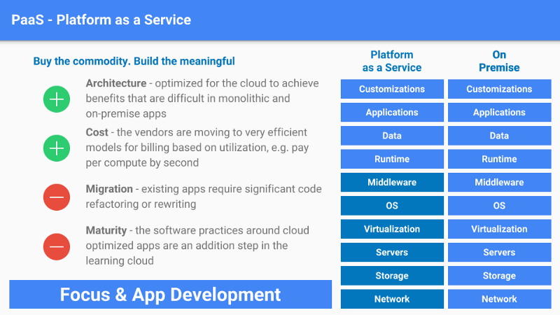

Introducción a OpenShift
Aplicaciones orientadas a microservicios
Alberto Molina Coballes, José Luis Rodríguez Rodríguez and José Domingo Muñoz Rodríguez
Cloud Computing in European schools. Project: 2017-1-ES01-KA202-038471
 


Theme by: reveal.js
Despliegue tradicional de aplicaciones
- Las aplicaciones tradicionalmente se implementan como un sólo conjunto de librerías y archivos de configuración.
- Se implementan en un sistema operativo (en servidores físicos o virtuales) con un conjunto se servicios en ejecución (web, base de datos, ...).
- Desventaja 1: Las actualizaciones del S.O. puede interrumpir la aplicación.
- Desventaja 2: Si en un mismo sistema tenemos varias aplicaciones, las actualizaciones de librerías de una ella puede afectar a otras aplicaciones.
- Posible solución: Sistemas en alta disponibilidad que minimicen el tiempo de parada de una aplicación.
¿Qué alternativa podemos encontrar hoy en día?
Los Contenedores
 Red Hat
Red Hat
 Fuente: https://azure.microsoft.com/es-es/overview/what-is-paas/

Fuente: https://medium.com/@lopezlucas/introducci%C3%B3n-a-cloud-saas-iaas-paas-772c92c29bb1
Fuente: https://azure.microsoft.com/es-es/overview/what-is-paas/

Fuente: https://medium.com/@lopezlucas/introducci%C3%B3n-a-cloud-saas-iaas-paas-772c92c29bb1
- Los desarrolladores solo tienen que preocuparse por la programación de las aplicaciones.
- No se preocupan por la configuración ni el software que hay por debajo, ahorrando tiempo y recursos.
- PaaS puede ejecutarse por encima del IaaS (si vamos a virtualizar todo), en máquinas físicas e incluso en contenedores.
- Obtenemos características de Cloud Computing: elasticidad, pago por uso,...
- Las operaciones se trasforman en DevOps
- Grandes proveedores (ofrecen de todo!!!)...
- Amazon Web Service
- Microsoft Azure
- Google App Engine
- Oracle Cloud Platform
- Pensada para desarrolladores...
- Para que cualquiera desarrolle...(no-code applicattions)
- QuickBase
- outsystems
- azuqua